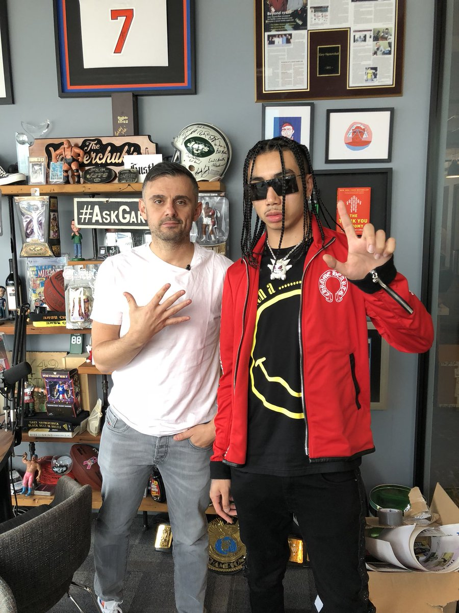

Gary Vaynerchuk
One of the greatest entrepreneurs
Gary Vaynerchuk is the chairman of VaynerX, a modern-day media and communications holding company and the active CEO of VaynerMedia, a full-service advertising agency servicing Fortune 100 clients across the company’s 4 locations.
In addition to VaynerMedia, VaynerX also includes Gallery Media Group, which houses women’s lifestyle brand PureWow and men’s lifestyle brand ONE37pm. In addition to running VaynerMedia, Gary also serves as a partner in the athlete representation agency VaynerSports, cannabis-focused branding and marketing agency Green Street and restaurant reservations app Resy.
Gary is a board/advisory member of Ad Council and Pencils of Promise, and is a longtime Well Member of Charity:Water.
Gary is a highly sought after public speaker, a 5-time New York Times bestselling author, as well as a prolific angel investor with early investments in companies such as Facebook, Twitter, Tumblr, Venmo, and Uber.
Gary is currently the subject of DailyVee, an online documentary series highlighting what it’s like to be a CEO and public figure in today’s digital world, as well the host of The GaryVee Audio Experience, a top 100 global podcast, and host of #AskGaryVee, a business and advice Q&A show which can be found on both YouTube and Facebook.
Gary also appeared as judge in Apple’s first original series “Planet of the Apps” alongside Gwyneth Paltrow, Jessica Alba and Will.i.am.
